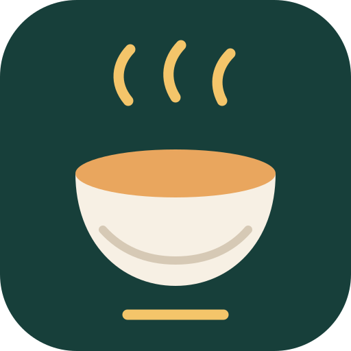

Recipe card
A saved recipe page with a bookmark. The clearest signal for a personal recipe library.
Small-size legibility check
Cook Gram · icon exploration
Designed to feel warm and memorable, while keeping the main shape clear when the icon is small on an Android home screen.
A saved recipe page with a bookmark. The clearest signal for a personal recipe library.

Concept 02A simple, language-neutral food mark. Warm and distinctive, but less explicit about saving.
A recipe card with a heart and saved check. Friendly and social without an Instagram-like camera.